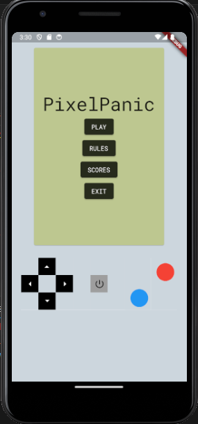
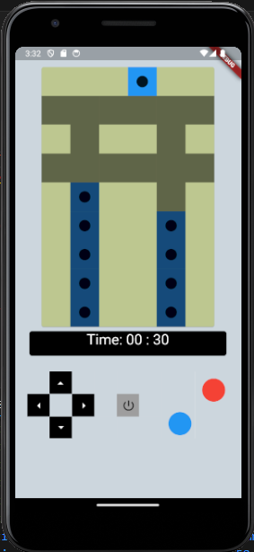
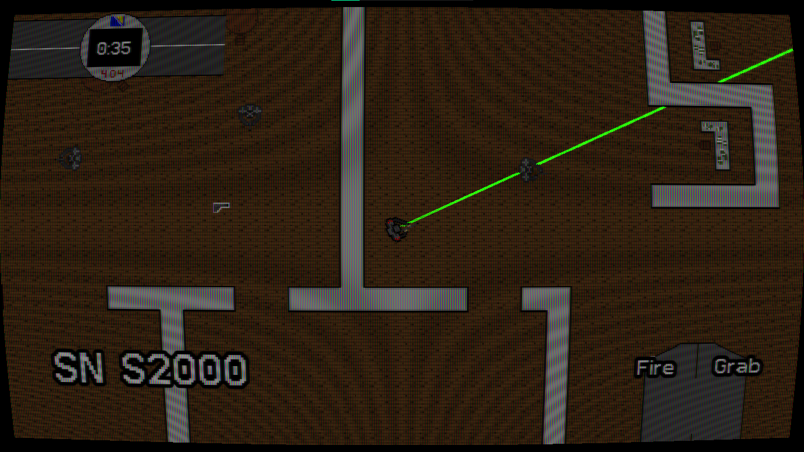
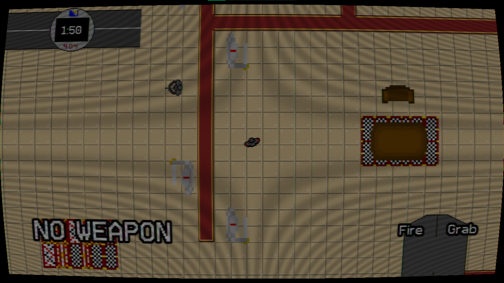
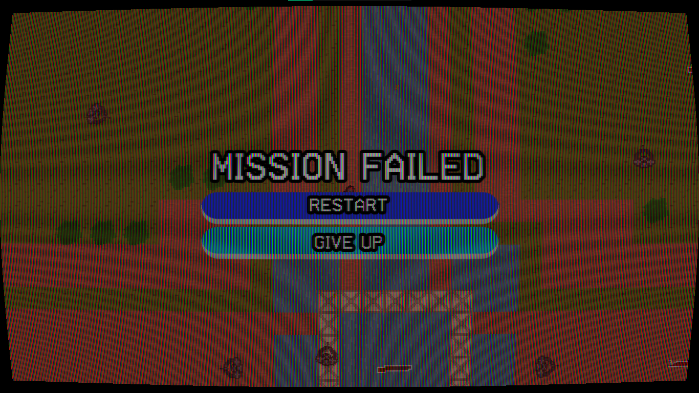
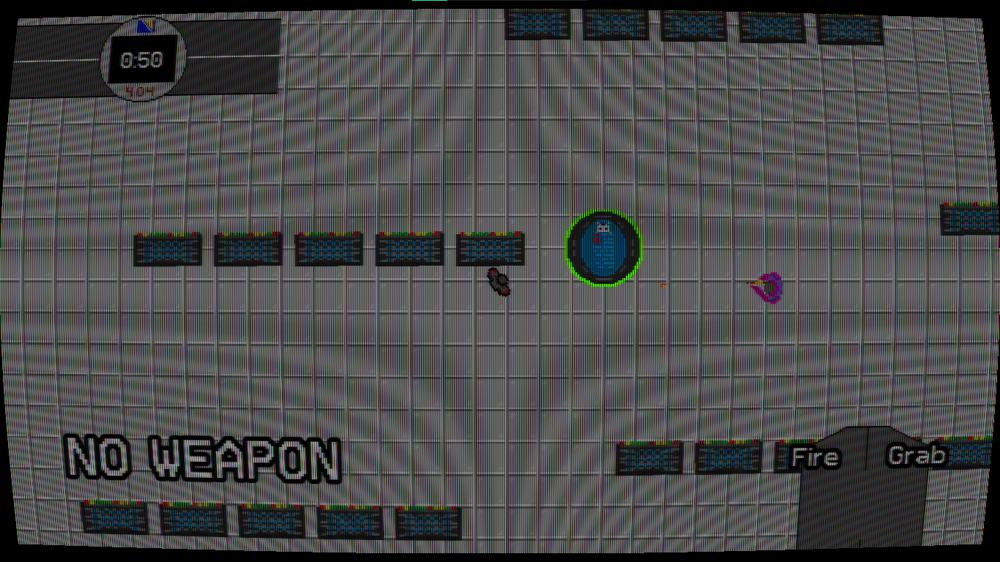
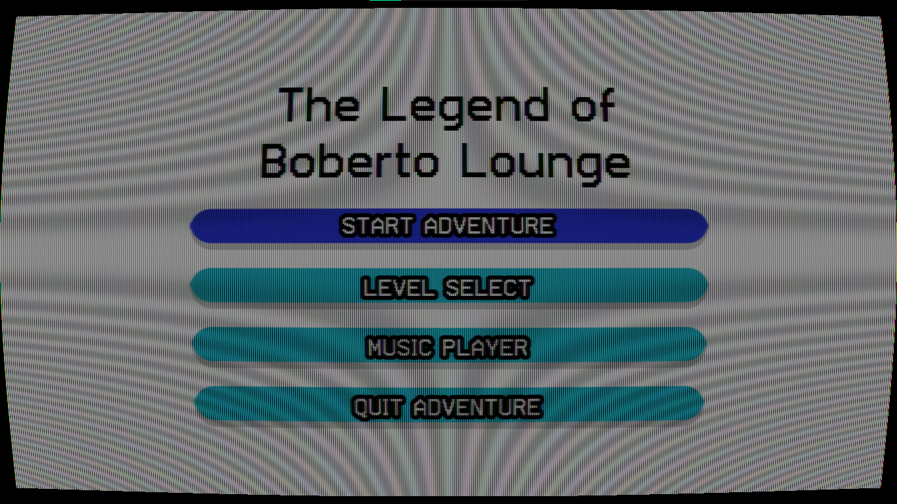

Sample of AI model detecting players (in red) and ball (in pink) in a recording of a football match.
Sample of AI model calculating the amount of possession a team is holding within a time period.







Detecting the colors on a Rubik's Cube:
Utilized the bluetooth capabilities of the Arduino board to manually control lights using a smartphone.
Created circuitry combined with motion sensing and a simple digital screen to create an "8-Ball" that answers questions.
Leveraged the cloud capabilities of the Arduino to control lights on a board from a remote machine.